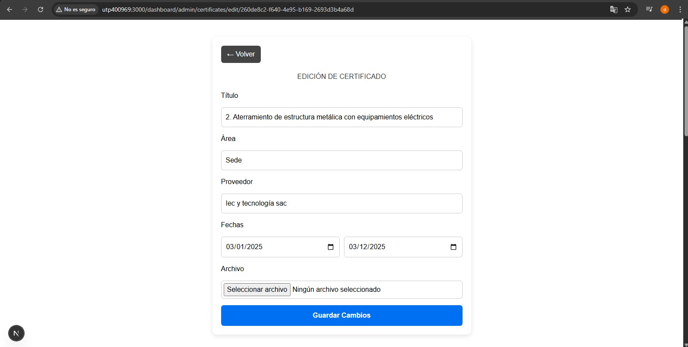
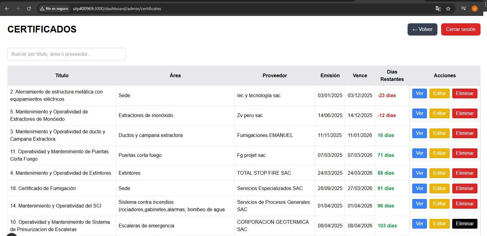
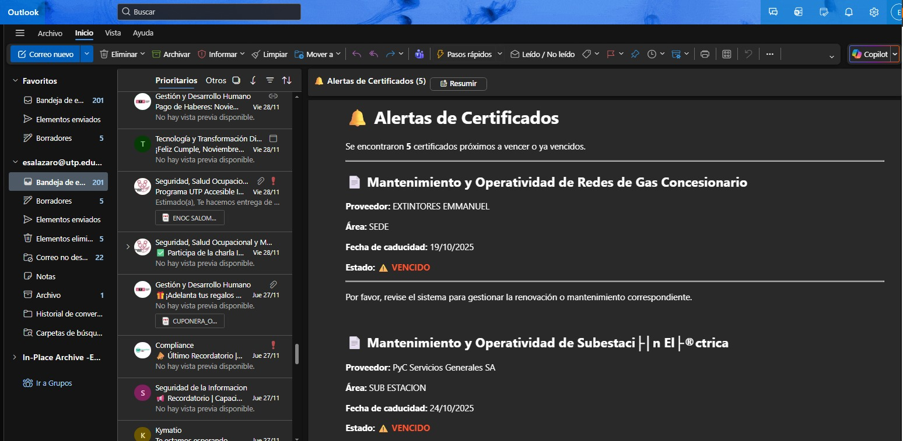

Registro y Almacenamiento de Certificados
// Creación de certificado
await prisma.certificado.create({
data: {
nombre,
fecha_emision,
fecha_vencimiento,
archivo_url
}
});
Este bloque registra un nuevo certificado en la base de datos, almacenando fechas clave y la referencia al documento digital. La información es utilizada posteriormente para el control de vencimientos.
Control de Fechas de Caducidad
// Consulta de certificados por vencer
const proximos = await prisma.certificado.findMany({
where: {
fecha_vencimiento: {
lte: limiteFecha
}
}
});
Permite identificar automáticamente los certificados próximos a vencer, facilitando la generación de alertas preventivas antes de la caducidad.
Envío Automático de Alertas por Correo
// Envío de correo de alerta
await transporter.sendMail({
to: usuario.email,
subject: 'Certificado próximo a vencer',
html: templateCorreo(certificado)
});
Sistema de notificaciones automáticas que envía correos informando sobre certificados próximos a vencer, reduciendo riesgos administrativos y olvidos.
